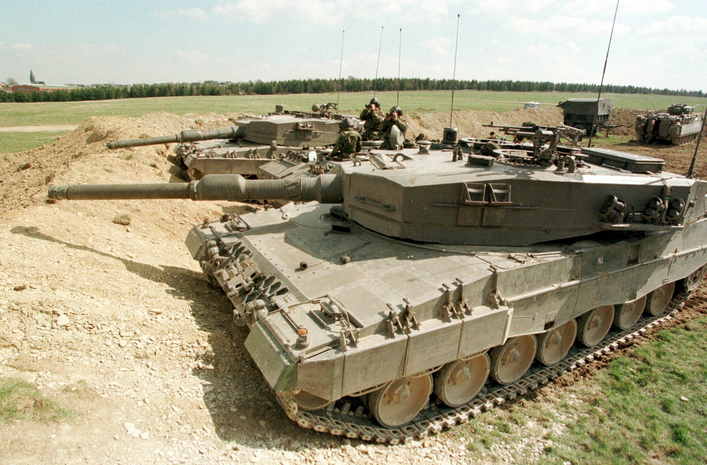

Leopard 2A5 main battle tank during a teaching and combat demonstration.
The Leopard 2 is a third generation German main battle tank (MBT). Developed by Krauss-Maffei in the 1970s,
the tank entered service in 1979 and replaced the earlier Leopard 1 as the main battle tank of the West German
army.
Various iterations of the Leopard 2 continue to be operated by the armed forces of Germany, as well as 13 other
European countries, and several non-European countries, including Canada, Chile, Indonesia, and Singapore.
Some operating countries have licensed the Leopard 2 design for local production and domestic development.

Dutch Leopard 2A4 tanks, 1997
There are two main development tranches of the Leopard 2. The first encompasses tanks produced up to the
Leopard 2A4 standard and are characterised by their vertically faced turret armour.
The second tranche, from Leopard 2A5 onwards, has an angled, arrow-shaped, turret appliqué armour,
together with other improvements. The main armament of all Leopard 2 tanks is a smoothbore 120 mm cannon
made by Rheinmetall.
A German Army Leopard 2A6, assigned to the 104th Panzer Battalion conducting high-speed manoeuvres
This is operated with a digital fire control system, laser rangefinder, and advanced night vision and sighting
equipment. The tank is powered by a V12 twin-turbo diesel engine made by MTU Friedrichshafen.
In the 1990s, the Leopard 2 was used by the German Army on peacekeeping operations in Kosovo. In the 2000s,
Dutch, Danish and Canadian forces deployed their Leopard 2 tanks in the War in Afghanistan as part of their
contribution to the International Security Assistance Force.
In the 2010s, Turkish Leopard 2 tanks saw action in Syria. Since 2023, Ukrainian Leopard 2 tanks are
seeing action in the Russo-Ukrainian war.
LEOPARD TANK In FIRING ACTION! (During Annual Training Event)